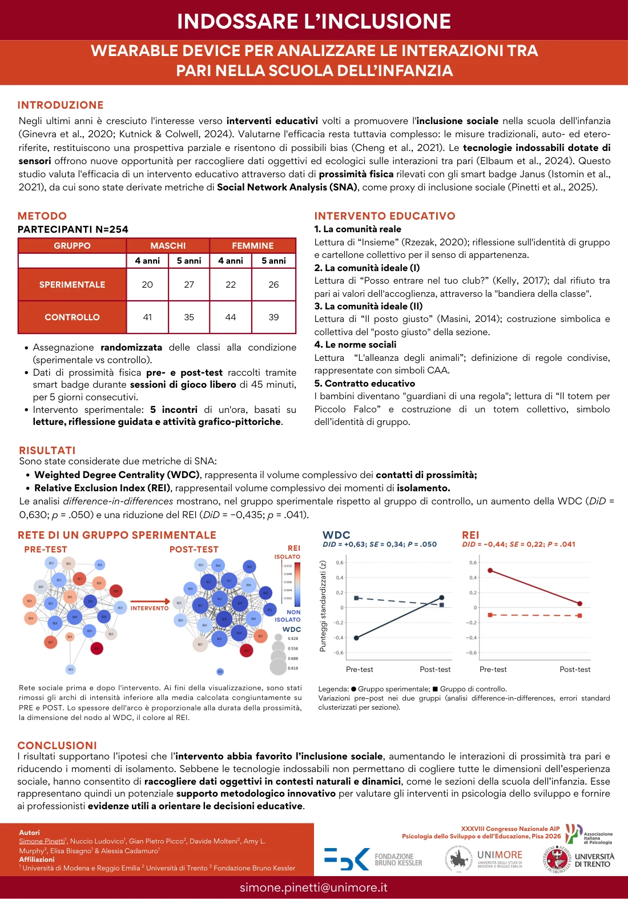
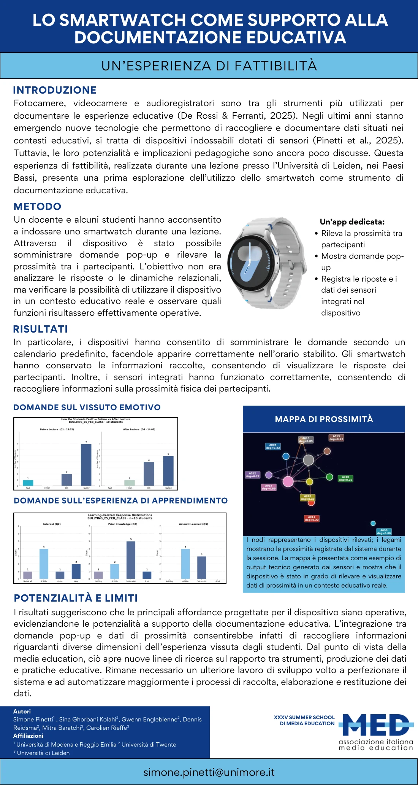
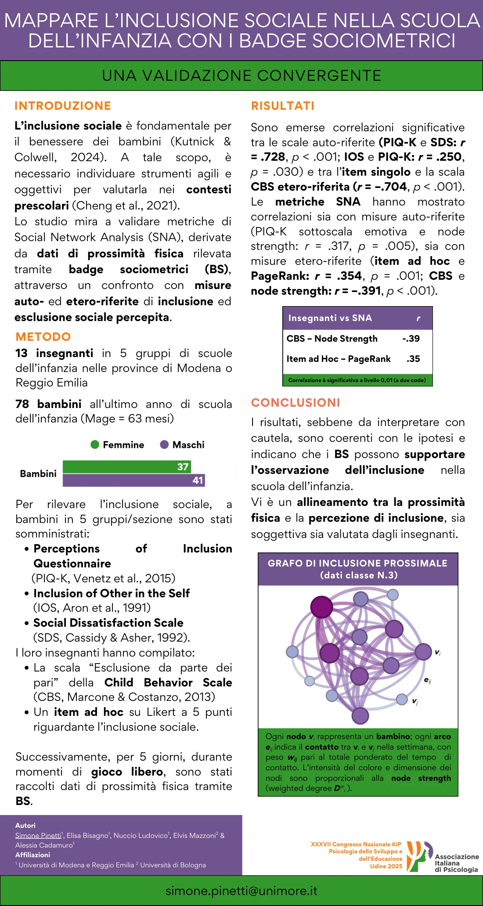

2026
Corso di analisi dei dati in R
Leiden University
Digital Educator, Digital Teacher, Digital Pedagogist, Digital Researcher
Mi occupo di educazione, tecnologie digitali e ricerca educativa, con particolare attenzione alle relazioni sociali e all’inclusione.
Il mio percorso nasce dalla pratica educativa: ho lavorato per tre anni come insegnante nella scuola dell’infanzia e ho maturato esperienze come educatore e tutor didattico. Ho conseguito tre lauree presso l’Università di Modena e Reggio Emilia, in Scienze della Formazione Primaria, Digital Education e Scienze Pedagogiche.
Dal 2023 al 2026 ho svolto il percorso di dottorato in Learning Sciences and Digital Technologies (UNIMORE), con un periodo di visiting research presso Leiden University. La mia ricerca integra prospettive pedagogiche e psicologiche con metodi quantitativi e tecnologie per comprendere e promuovere la partecipazione sociale nei contesti educativi.
Università di Modena e Reggio Emilia · Technology Enhanced Learning & Advanced Technologies for Education
UNIMORE
Leiden University · Faculty of Social and Behavioural Sciences
Leiden University
UNIMORE · 110/110 cum laude
UNIMORE · 110/110 e lode
UNIMORE · 110/110 cum laude
UNIMORE · 110/110 e lode
Faculty of Education for Children and Special Educational Needs
University of Debrecen
UNIMORE · 110/110 cum laude
UNIMORE · 110/110 e lode
Leiden University
MED – Associazione Italiana Media Education · Ferrara
MED – Associazione Italiana Media Education · Ferrara
LESDIT–SIREM
MED – Associazione Italiana Media Education · Modena
Adiaba Consultancy Group
Fondazione Francesco Manni
Analisi statistica e analisi delle reti: SPSS, jamovi, Gephi, NetMiner. Formazione in R. Lingue: italiano, inglese (C1), francese (B1), ungherese (A1).
Studio come le tecnologie digitali possano sostenere la ricerca educativa, la documentazione delle interazioni e la progettazione di contesti inclusivi. Di seguito alcuni progetti ai quali ho contribuito.
Validazione convergente delle misure di prossimità ricavate dai badge con strumenti tradizionali di valutazione dell’inclusione. I dati relazionali sono analizzati mediante Social Network Analysis.
Valutazione di un intervento educativo articolato in cinque incontri con storie, giochi e attività grafico-pittoriche. Integrazione di questionari e badge sociometrici.
Progetto di validazione italiana del Perceptions of Inclusion Questionnaire (PIQ-K e PIQ-EARLY) nella scuola dell’infanzia e nei primi anni della primaria.
Raccolta di dati di prossimità, attività fisica e autovalutazioni in-the-moment in contesti scolastici e di ricerca nei Paesi Bassi.
Intervento nella scuola secondaria di primo grado per promuovere pensiero critico, comprensione dei messaggi mediali ed espressione attraverso i linguaggi digitali.
Lettura e analisi della saga di Harry Potter, con attività ludiche per promuovere empatia e intenzione di intervenire in difesa delle vittime.
Progetto PRIN PNRR 2022 sul benessere psicologico nello sport giovanile e sulla prevenzione del bullismo mediante competenze emotive e sociali.
Studio della relazione tra teoria della mente, comprensione delle emoji e frequenza d’uso della messaggistica digitale.
Articoli scientifici pubblicati e preprint, con collegamento alla fonte originale.
Serraiocco, S., Pinetti, S., Cadamuro, A., & Bisagno, E.
Journal of e-Learning and Knowledge Society, 22(2), 1–10.
DOI: 10.20368/1971-8829/1136266Pinetti, S., Bisagno, E., Mazzoni, E., & Cadamuro, A.
Journal of e-Learning and Knowledge Society, 21(1), 267–280.
DOI: 10.20368/1971-8829/1135997Bisagno, E., Pinetti, S., Lucarini, A., Basciano, M., & Cadamuro, A.
Cyberpsychology: Journal of Psychosocial Research on Cyberspace, 19(4), Article 10.
DOI: 10.5817/CP2025-4-10Vezzali, L., Lucarini, A., Pinetti, S., Cocco, V. M., McKeown, S., Cadamuro, A., & Bisagno, E.
Journal of Community & Applied Social Psychology, 35(4), e70061.
DOI: 10.1002/casp.70061Pinetti, S., Belzunegui-Pastor, À., Tsou, Y.-T., Chen, Y.-W., Delsink, E., Kho, H., Li, Z., & Rieffe, C.Preprint
Preprint
DOI: 10.31234/osf.io/wb8hg_v1Cultore della materia in Psicologia dello Sviluppo e dell’Educazione nei corsi di laurea in Digital Education e Scienze e Tecniche Psicologiche (UNIMORE, a.a. 2024/25–2025/26).
Correlatore di tesi su tecnologie digitali, intelligenza artificiale in educazione, media education, inclusione sociale e analisi delle reti.
Insegnante titolare di sezione presso la Scuola dell’Infanzia Sebastiano Corradi (2019–2022), con attenzione alla progettazione didattica e ai bisogni educativi speciali.
Interventi di orientamento universitario, seminari su psicologia e social network, incontri Pre-Classes a Leiden University e iniziative con famiglie e scuole.
Contributi scientifici a congressi, summer school e incontri di ricerca, come autore o coautore.
XXXVIII Congresso Nazionale AIP – Psicologia dello Sviluppo e dell’Educazione
XXXV Summer School in Media Education
Building 4 Belonging Consortium Meeting
XXV Congresso Nazionale AIPS · Coautore del contributo
XXXVII Congresso Nazionale AIP – Psicologia dello Sviluppo e dell’Educazione
XIX Congresso Nazionale AIP – Psicologia Sociale
XIX Congresso Nazionale AIP – Psicologia Sociale
XIX Congresso Nazionale AIP – Psicologia Sociale
Italian Symposium on Digital Education (ISYDE)
Italian Symposium on Digital Education (ISYDE)

Simone Pinetti, Nuccio Ludovico, Gian Pietro Picco, Davide Molteni, Amy L. Murphy, Elisa Bisagno, Alessia Cadamuro
XXXVIII Congresso Nazionale AIP – Psicologia dello Sviluppo e dell’Educazione · Pisa, 2026

Simone Pinetti, Sina Ghorbani Kolahi, Gwenn Englebienne, Dennis Reidsma, Mitra Baratchi, Carolien Rieffe
XXXV Summer School di Media Education · Ferrara, 2026

Simone Pinetti, Elisa Bisagno, Nuccio Ludovico, Elvis Mazzoni, Alessia Cadamuro
XXXVII Congresso Nazionale AIP – Psicologia dello Sviluppo e dell’Educazione · Udine, 2025
Il mio portfolio di certificazioni digitali raccoglie attestazioni di competenze e percorsi formativi.
Profilo Open Badge PassportLe città in cui ho studiato, lavorato, svolto attività di ricerca e contribuito a incontri scientifici. Seleziona un luogo per esplorare le esperienze.
Per collaborazioni di ricerca, iniziative educative e attività formative.